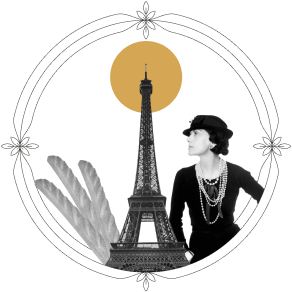
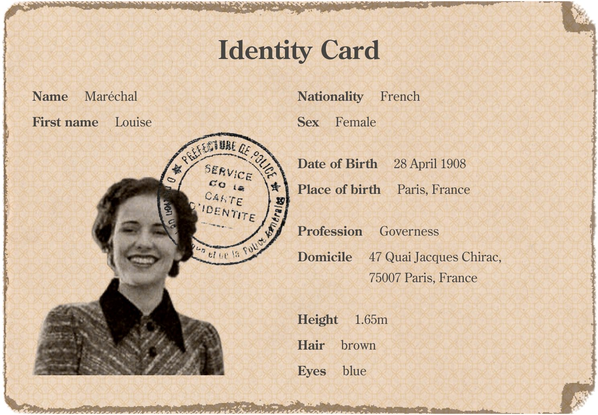

Paris, France
Paris, the City of Lights, has a big influence in the fashion scene with people like Coco Chanel. Don't forget to enjoy a fresh out the oven baguette in front of its iconic landmark, the Eiffel Tower.
O train de luxe!
by Louise Maréchal
There I stood, on the platform of Paris's Gare de Lyon, as a young Parisian governess to a wealthy businessman's family, accompanying them on their journey to Cairo. The clock struck nine in the evening, and the train was set to depart in half an hour.
Behind me I overheard two gentlemen talking enthusiastically about the upcoming adventure and about the trains' history.
Say, sleeper trains originated in America, you know.
Oh, I reckon? I thought it was more of a European affair.
Not at all! But then along came this Belgian engineer, Georges Nagelmackers. Brought 'em here and made 'em downright lavish! Started up the Compagnie Internationale des Wagons-Lits, too.
Ah, that fella!
Day 1
Paris, France
It was busy on the platform, such a varied range of people all waiting for the Orient Express!
click to find out
As the grand Orient Express rolled in, its sleek, polished exterior hinted at the luxurious journey ahead. Our baggage was stored in the luggage van as an attendant showed us to our compartments.
We were ready to go!
The luxury of the Orient Express was something I had never seen before. The attention to detail was amazing. I shared a compartment with the daughter, while the mother and father each had their own.
Solo traveler? Share a room with a stranger of the same sex. You get to save money and meet new people at the same time.
Day 2
Somewhere in Italy
An extensive breakfast & sumptuous food
In the dining car, we were greeted with colourful carpets, white table linen, champagne buckets, crystal glasses and carafes, silver cutlery and bone china plates.
The Compagnie Internationale des Wagons-Lits was well known for its sumptuous food. In the evening we were served an excellent menu. It makes my mouth water just remembering it.
click to find out


drag you favorite meal in the journal
Day 3
Somewhere in Yugoslavia
Paris to Constantinople in just 3 days
In the dining car, we were greeted with colourful carpets, white table linen, champagne buckets, crystal glasses and carafes, silver cutlery and bone china plates.
Discover the charm of sleeper trains! Drift off in one country and wake up in another. It's like a magical journey through the night!
add your favorite desitnation to the journal
Paris, the City of Lights, has a big influence in the fashion scene with people like Coco Chanel. Don't forget to enjoy a fresh out the oven baguette in front of its iconic landmark, the Eiffel Tower.
Dijon, France, is known for its Gothic cathedral and its connection to Gustave Eiffel. Don't miss trying the world-famous Dijon mustard, a culinary delight from this charming city.
Lausanne, Switzerland, boasts the charm of its historic cathedral. Immerse yourself in the taste of swiss chocolate like Toblerone or learn some physics with the intellectual legacy of Albert Einstein.
Milan, Italy, captures the spirit of Renaissance with the magnificent Duomo di Milano and of course the genius Leonardo da Vinci. Delight your taste buds with the famed Milanese risotto.
In the heart of enchanting Venice, where gondolas gracefully navigate the canals, the spirit of Marco Polo lingers, and the aroma of Polenta e Schie fills the air, creating a symphony of Venetian charm.
In Trieste, the captivating Miramare Castle stands as a testament to its historical charm. Indulge in the culinary delight of Rotolo di Spinaci, while the city's streets echo the literary legacy of James Joyce.

In Zagreb, where St. Mark's Church graces the skyline, the inventive spirit of Nikola Tesla resonates, and the delightful aroma of Octopus Peka captures the essence of Croatian culinary excellence.
Belgrade, Serbia's lively capital, boasts cultural gems like the St. Sava Temple and is linked to Nobel laureate Ivo Andrić. Don't forget to enjoy local flavors with the renowned dish Ćevapi.
Amidst the Balkans, Sofia showcases the grandeur of the Alexander Nevsky Cathedral, the delight of banitsa pastries, and the historical legacy of Stefan Stambolov, weaving a tapestry of cultural richness.
Constantinople, Turkey, home to the mesmerizing Blue Mosque and delectable kebabs, invites you to savor its cultural richness. Explore the spiritual legacy of the renowned poet Rumi.
The further we went ...
The more exotic the surroundings became.
Day 4
Constantinople, Turkey
Day 5
Constantinople, Turkey
Day 6
Cairo, Egypt